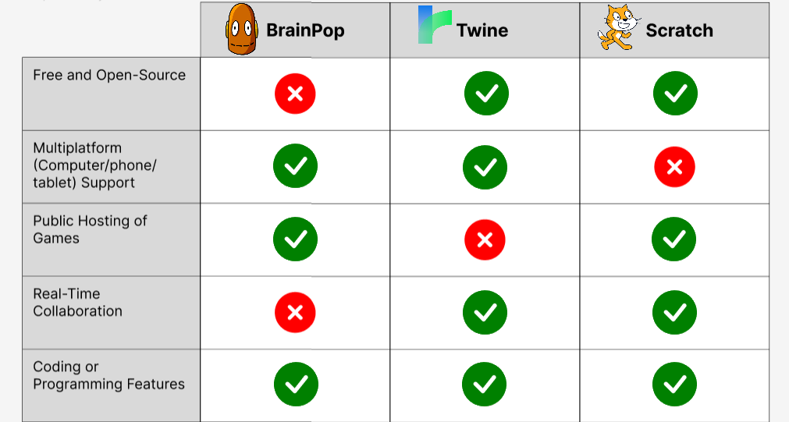
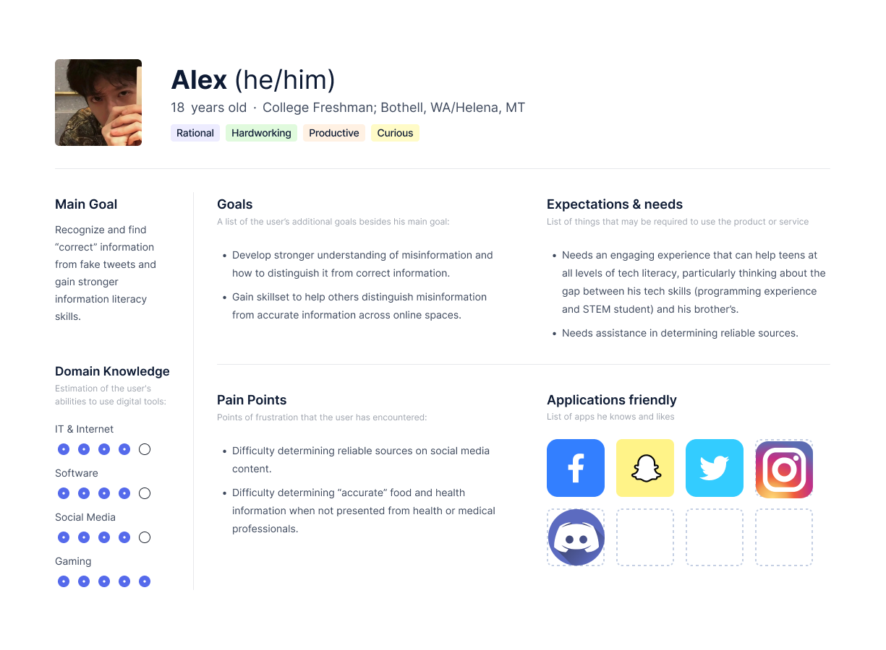
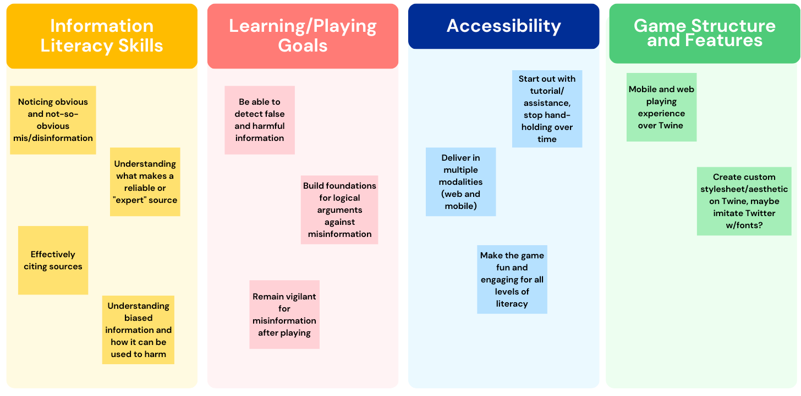

Baloney Detectives

Project Overview:
Genre: Escape Room, Educational Game
Time Frame: January - March 2023
Technologies Used:
- Game Design/Hi-Fi Prototyping: Twine (HTML/CSS)
- Lo-Fi Prototpying and UX Research Visualization: Figma
- Project Management: Google Drive
Group Members/Credits:
- Andrew Charlton-Jones: Narrative Lead
- Joe Lollo and Sabrina Hsu: Design Co-Leads
- Luka Taing: Technical Lead
Design Space:
Misinformation is a pressing issue in today's society, as anyone can post anything online. This game, taking inspiration from Carl Sagan's tools and techniques for "baloney detection," aims to build Internet literacy and resilience around misinformation to teens in an accessible, engaging way.
Our guiding question was How can we build awareness and resilience around misinformation in a fun and engaging manner?
This escape room was created as our quarter-long project for LIS 547, Design Methods, in the MLIS program at the University of Washington.
Ideation & Inspiration:
The beginning of our ideation phase came with a project pitch we wrote as a team, where we looked at existing projects, and gaps, in our design space, assigned group roles based on our interests, and discussed our timeline and potential risks.
We then looked at different tools for game design since we knew that we wanted to design a game. After performing a heuristic evaluation of BrainPOP, Twine, and Scratch (shown below), we chose Twine as our platform due to it being easy to make and deploy games. We were looking for a platform that we could all contriubte to, and Twine stood out for its value of accessibility intersecting with ours.

We worked through this phase under the assumptions that teenagers would be willing to play the game, that teachers would be willing to use the game as a teaching tool, and that teens and teachers alike would have access to computers.
Initial Prototype:
Our first escape room prototype was also made on Figma, and featured a basic "point-and-click" structure using mouse interactions. Using Figma to test interactions was very helfpul in this prototyping process, since it allows for multiple screen displays, similar to Twine.
A significant amount of effort was put into our game's narrative and how the puzzles would relate to it. We decided to create a concept map, shown below, that shows the relationships between the game's narrative and real-world stakeholders.
During this phase, we were able to use our own background and experience in the development of our game. Our Narrative Lead has a strong interest in history and retro technology, which led to the creation of our villain, a health influencer named "Vercingetorix" (after the Gaulic king), and some of the cultural references made in the narrative. Additionally, the misinformation puzzles we added were directly based on things that we were misinformed about, in the hope that teens do not fall for what we fell for.
Stakeholders:
Expert Interview:
Before interviewing our teen users, we approached Dr. Jason Yip, a professor in the iSchool and co-director of the Digital Youth Lab, for an expert perspective. An educator and educational game designer himself, he also represents a direct stakeholder demographic and was very willing to help us.
Professor Yip gave us some very helpful advice for our project, namely that that our game should be relatable and accessible to teens in terms of language and content, but not so accessible that it is too "easy" to discern misinformation from accurate information.
User Personas:
This was the first time we had created any type of user persona, and since 3/4 of us wanted to go into design-related fields, this was a very useful learning process. We interviewed my teenage cousins, who were in two separate phases of experience with technology and learning about misinformation, and created user personas based on the different needs they would have.

After our interviews were finished and our user personas were made, we decided to combine all the data points we gathered and create an affinity diagram that visually represents how they align with our game's core values.

Final Deliverables:
(High-Fidelity) Game Prototype:
Escape Room Host Guide:
MisInfo Day Presentation: